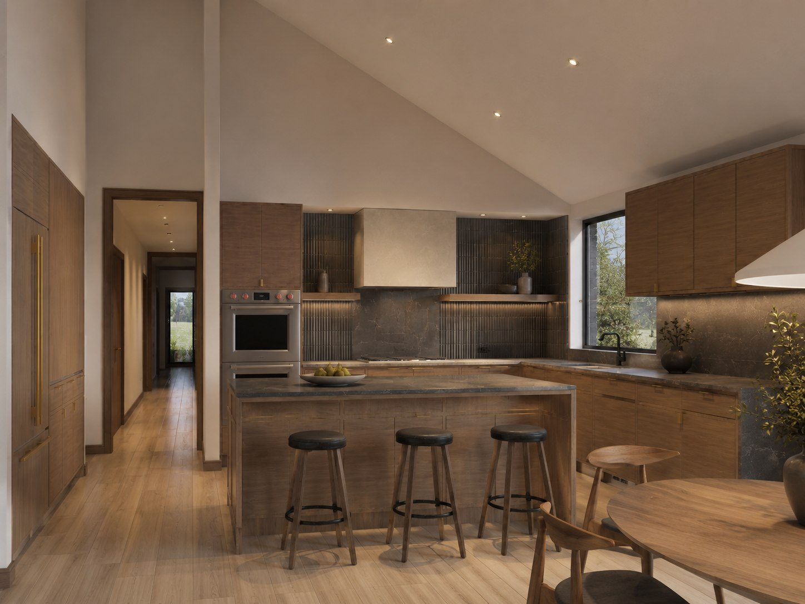
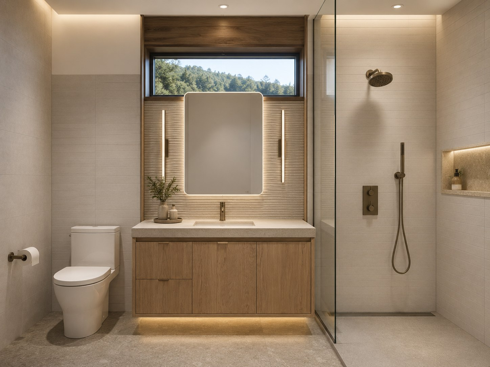

Deep Creek Lake, Maryland · In construction
Deep Creek
A modern reimagining of the mountain chalet — Architecture by Todd Webb · Built by Steve Howard.
Deep Creek Lake, Maryland · In construction
A modern reimagining of the mountain chalet — Architecture by Todd Webb · Built by Steve Howard.
The First Distinct Build Home
The classic mountain chalet belongs at Deep Creek — the slope, the long view, the fire and the wall of glass. We're carrying it forward for the way people live now: cleaner lines, stronger design, durable materials, and better light. A modern mountain home that honors its setting rather than fighting it.
Deep Creek is the first home Distinct Build is developing for itself. Twin gables in warm wood sit low against the tree line and open to glass where the land falls toward the view — architect-grade design and master-built construction, conceived as one.
The home is in construction now. The images below are renderings of the design being built.
Renderings


A fourth rendering is on the way — we'll add it here as the home progresses.
The Design
Todd designed Deep Creek as a simple, strong volume with a flexible interior and one consistent design language — a home that's easier to build because it's clearly conceived, imagined for a family or a second-home owner who loves to host.
Every decision here — the roof pitch, the depth of the glazing, the way the wood wraps the gable — was designed by the architect and priced by the builder in the same room. Nothing is value-engineered out after the fact, because the people who own the result are the ones who drew it.
That is the whole premise, made physical: a mountain home that arrives exactly as it was imagined — warm, but never heavy; rooted in its place, but unmistakably modern.
Behind the Walls
Distinct Build reimagines the classic Deep Creek chalet with modern architecture and building-science-first construction — so the home is as durable and comfortable as it is beautiful. Water management, vapor control, drained wall assemblies, air sealing, and durable materials, all considered before framing begins.
Interested in Deep Creek?